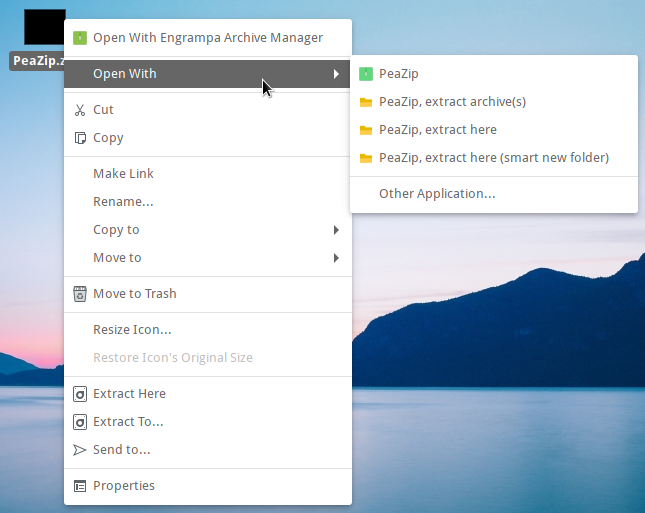

PeaZip for BSD
download notes
This
page features FreeBSD x86_64 build of PeaZip for GTK2 widget set,
packed as portable application, not needing installation to run -
simply unzip the package and use the binary.
If you desire to build or package the application differently (for
other BDS systems on different CPU architectures, employing different
widget sets, targeting a specific package manager) you can find
comprehensive informations on
PeaZip sources page.
PeaZip running on
GhostBSD
x86_64 system, Mate DE with light theme, see dark
mode screenshot here
Alternative BSD
downloads
FreeBSD
Ports
for PeaZip
Search latest packages for PeaZip in
FreeBSD Ports
BSD
Ports on Repology database
Search latest packages of PeaZip for BSD
distributions
What is PeaZip for BSD
PeaZip
is a
cross-platform file archival utility / file compressor software
supporting
over 200 archive
formats (manage.7z, .bz2, ,ace, .cab, .gz, .iso, .rar, .tar, .zip,
.zipx archives), an
Open
Source rar / zip files utility that supports the same wide array of
functions focused on
file compression
/
decompression, security (
encryption,
file hashing / checksum,
secure
deletion) and
file management (
split and join volumes,
find
duplicate files by checksum or hash calculation or direct
comparison,...),
providing over multiple operating systems
and hardware platforms the same
powerful but user-friendly
GUI
frontend to 7-Zip / p7Zip, FreeArc, PAQ
and other Free Software backend archiving / compression technologies.
Supported formats ranges form very fast compressors like Brotli and
Zstandard, to extremely powerful compressors like 7Z / p7zip, and
*PAQ family of compression
utilities.
RAR files extraction is
supported out of the box through 7z / p7zip Open Source unrar
implementation, but using Free Software alternative formats is actively
recommended.

Example of PeaZip context
menu on
GhostBSD, Mate DE
FreeBSD
systems
Linux
Compatibility Layer should allow to run
PeaZip
for
Linux binaries as alternative to native PeaZip for BSD Unix build.
Read more
about how
to run
PeaZip
file compressor / archival software on
Darwin and Apple
OSX /
maOS
machines on
PeaZip for macOS page.